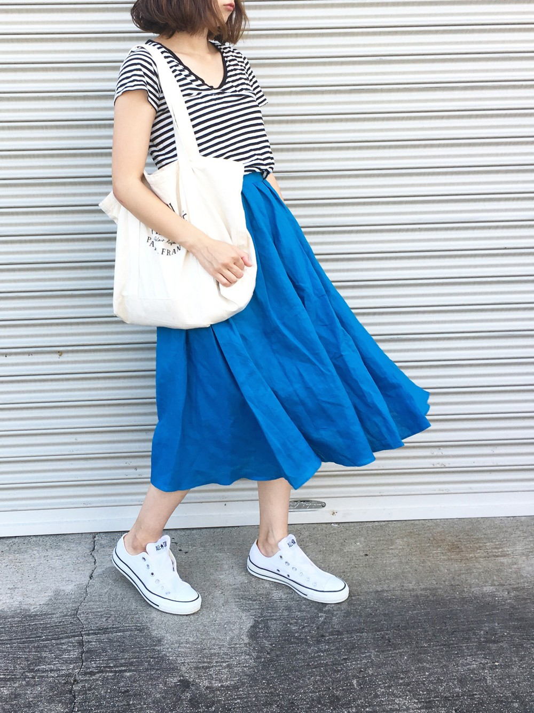

 お気に入りに追加 平均評価:4 ★★★★☆ 評価 1 2 3 4 5 送信 投稿者:You GO 評価:★★★★★ とても素敵なコーディネートだと思います！今度真似してみたいと思います 投稿者:たくろ 評価:★★★☆☆ もう少しスカートのシワが伸びてればなぁと思います 夏らしいコーデにしてみました 白を基調にしてスカートを青にすることで涼し気な感じを演出してみました！ コメント、お気に入りよろしくお願いします！ 山田 花子 着用アイテム 白い靴 アイテム詳細